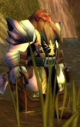

Guildes
Chasseurs de primes
Djaï
Age : 18Sexe : Femme
Race : Humain
Faction : Alliance
Formation : Guerrier
Description : Djaï est une jeune femme qui découvre ce monde avec émerveillement.
Longtemps retenue comme esclave chez les nains dark iron dans les steppes ardentes, elle n'avait jusqu'à sa fuite, jamais revu un lac, une rivière encore moins la mer.
Ce jour là elle avait pris des risques, des risques inconsidérés.
Du moins...c'est ce qu'elle raconte...
Elle vit à présent chaque jour respirant chaque bouffée d'air comme une bénédiction et semble faire abstraction des zones d'ombres qui teintent cette nouvelle vie.
Maladroite et sans doute un peu naive, elle a tendance à foncer tête baissée vers les ennuis.....
Plus d'infos sur Djaï >>>
Lire le récit de Djaï >>>
Grimtor
Age : 135Sexe : Homme
Race : Nain
Faction : Alliance
Formation : Chasseur
Description : Je me nomme Grimtor, je suis né à Brasse-tout. Mon pére était brasseur et ma mere travaillait le cuir. Je suivais pour ma part la formation de ma mère en matière de dépeçage. Hélas, ils sont morts tous les deux par des Troggs et des Gnomes lépreux non loin de Gnomeregan. Irild, un Gnome m'a recueillit et m'a enseigné l'art de l'ingégnierie. Depuis ce jour, je parcours les Terres en tant que chasseur.
Plus d'infos sur Grimtor >>>
Jalïyn
Age : 106Sexe : Homme
Race : Nain
Faction : Alliance
Formation : Chasseur
Plus d'infos sur Jalïyn >>>
Radjah
 Age : Indéterminé
Age : Indéterminé
Sexe : Homme
Race : Humain
Faction : Alliance
Formation : Voleur
Description : "Il n'y a de place dans mon monde, ni pour les traîtres, ni pour les faibles. Je consumerai le reste par les flammes de ma rancoeur, car je hais tout être de chair, toute once de vie. Je hais mon propre peuple ... et je te maudis Maegwen, de m'avoir libéré de ma prison, pour m'avoir amené dans ce monde poussièreux. Je te hais, Scheena, femme de toute humiliation, mon regard emprunt de désir saura venir à bout de ta détermination. Je te hais, Argrima, enfant de la sagesse, que la langue déliée n'a d'effet que pour les faibles femmes qui succombent à ce charme trompeur. Je te hais, Magdaléna, parce que tu es plus forte que moi et que ta beauté transparente n'a d'égale que ton savoir faire dans la chasse aux démons. Cette humiliation n'a que trop duré ... je ne saurais en souffrir davantage et mes plans arrivent bientôt à terme. Na'a ekhmir, mon frère Souhad."
Plus d'infos sur Radjah >>>
Lire les 28 récits de Radjah >>>